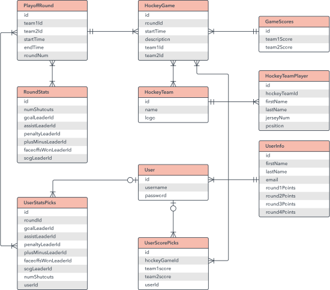
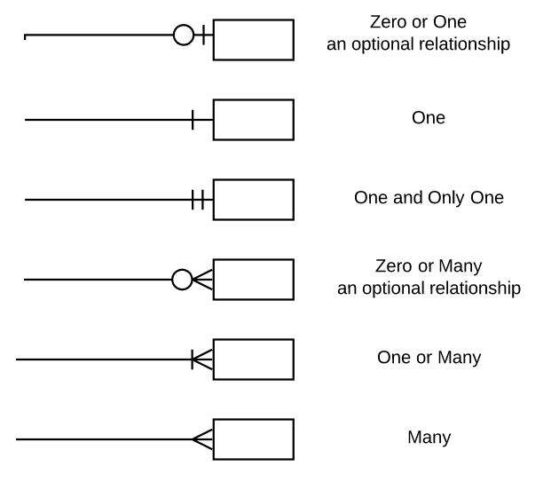

Entity Relationship (ER) diagramm on teatud tüüpi vooskeemi tüüp, mis illustreerib, kuidas "olemid" (nt inimesed, objektid või mõisted) on süsteemis üksteisega seotud.
ER diagramme kasutatakse kõige sagedamini relatsiooniandmebaaside kujundamiseks või silumiseks tarkvaratehnika, äriinfosüsteemide, hariduse ja teadustöö valdkondades.
Tuntud ka kui ERD-d või ER-mudelid, kasutavad nad määratletud sümbolite komplekti, nagu ristkülikud, rombid, ovaalid ja ühendusjooned, et kujutada olemite, suhete ja nende atribuutide omavahelist seotust.
Need peegeldavad grammatilist struktuuri, üksused on nimisõnad ja suhted kui tegusõnad.

Peter Cheni, kes on praegu Pittsburghis asuva Carnegie-Melloni ülikooli õppejõud,
tunnustatakse ER-i modelleerimise väljatöötamise eest andmebaaside kujundamiseks 1970. aastatel.
Töötades MIT-i Sloani juhtimiskoolis assistent proffessorina, avaldas ta 1976. aastal põhjaliku kirjutise pealkirjaga "Olemi-suhte mudel: andmete ühtse vaate suunas".
Laiemas plaanis pärineb asjade seotuse kujutamine kõige vähem Vana-Kreekast, Aristotelese, Sokratese ja Platoni töödest.
Bachman töötas välja teatud tüüpi andmestruktuuri diagrammi, mis sai tema järgi nimeks Bachmani diagramm.
Brown avaldas teoseid reaalmaailma süsteemide modelleerimise kohta.
Andmebaasi projekteerimine: ER diagramme kasutatakse relatsiooniliste andmebaaside modelleerimiseks ja kujundamiseks, võttes arvesse loogika- ja ärireegleid ning konkreetset rakendatavat tehnoloogiat.
Andmebaasi tõrkeotsing: ER diagramme kasutatakse olemasolevate andmebaaside analüüsimiseks, et leida ja lahendada loogika või juurutamise probleeme. Diagrammi joonistamine peaks näitama, kus see valesti läheb.
Äriinfosüsteemid: diagramme kasutatakse äriprotsessides kasutatavate relatsiooniandmebaaside kujundamiseks või analüüsimiseks.
Relatsiooniandmebaasist võib kasu saada mis tahes äriprotsess, mis kasutab väljastatud andmeid, mis hõlmavad üksusi, toiminguid ja koosmõju.
See võib protsesse sujuvamaks muuta, teavet hõlpsamini leida ja tulemusi parandada.
Äriprotsesside ümberprojekteerimine (BPR): ER-diagrammid aitavad analüüsida äriprotsesside ümberkorraldamisel kasutatavaid andmebaase ja modelleerida uut andmebaasi seadistust.
Haridus: Andmebaasid on tänapäeval relatsiooniteabe salvestamise meetod hariduslikel eesmärkidel ja hilisemaks hankimiseks, nii et ER-diagrammid võivad olla väärtuslikud nende andmestruktuuride kavandamisel.
Uuringud: kuna paljud uuringud keskenduvad struktureeritud andmetele, võivad ER-diagrammid mängida olulist rolli andmete analüüsimiseks kasulike andmebaaside loomisel.

Ainult relatsiooniandmete jaoks: mõistke, et eesmärk on näidata seoseid. ER diagrammid näitavad ainult seda relatsioonistruktuuri.
Mitte struktureerimata andmete puhul: kui andmed ei ole selgelt eri väljadeks, ridadeks või veergudeks jaotatud, on ER-diagrammide kasutamine tõenäoliselt piiratud.
Olemasoleva andmebaasiga integreerimise raskused: ER-mudelite kasutamine olemasoleva andmebaasiga integreerimiseks võib erinevate arhitektuuride tõttu olla väljakutse.